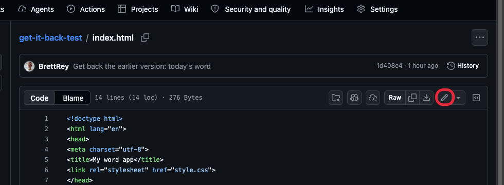
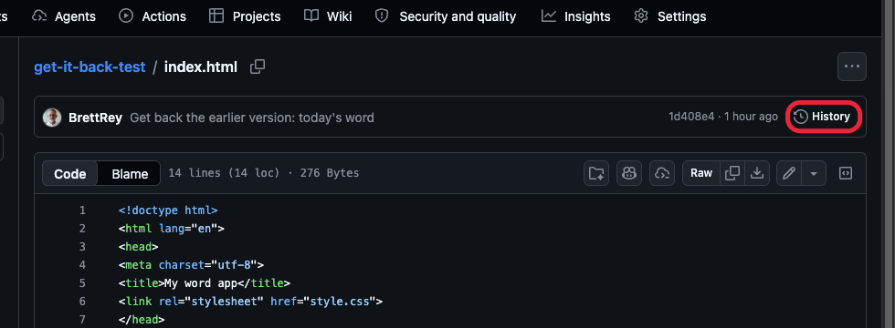
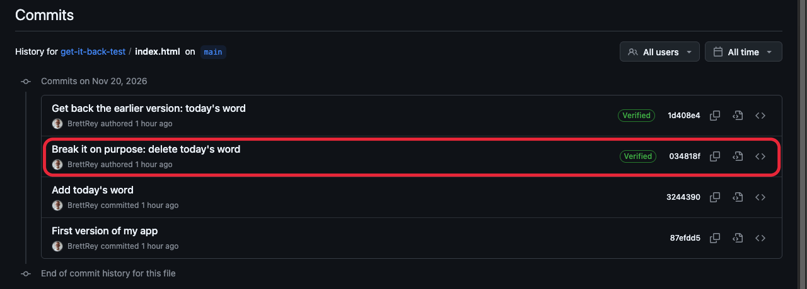
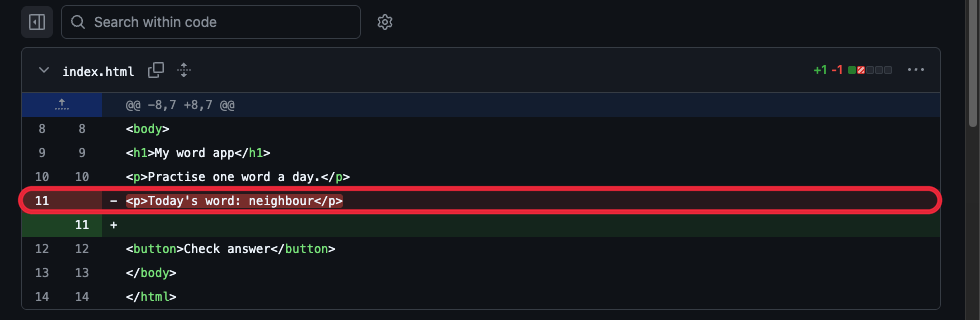
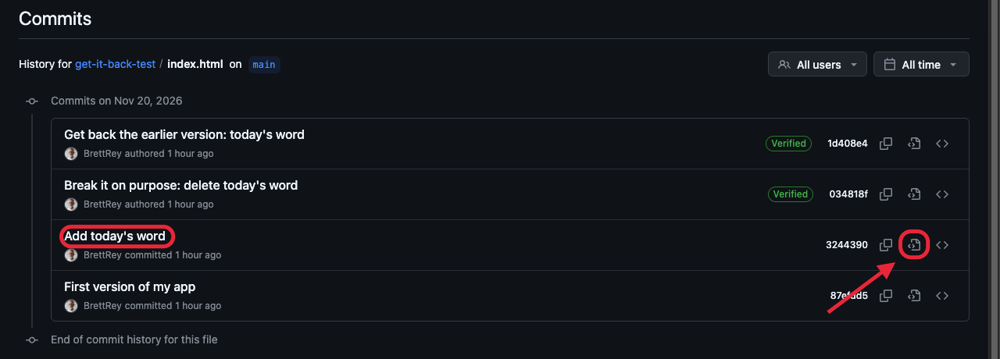
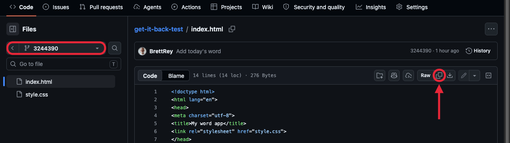
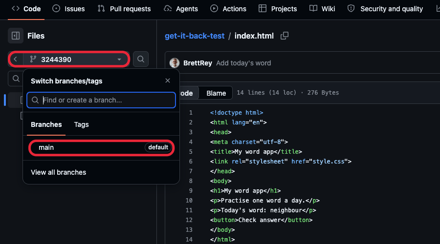
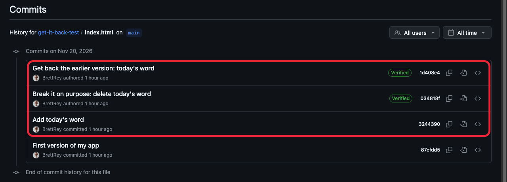

GEAP 103 · version history
Today you break your app on purpose.
Then you get it back.
This is one of the three things you need to show me: getting back an earlier version of a file.
Two checks
Why check first? If your computer has work that isn't on GitHub, you can get an error later. Not sure? Ask Brett before you break anything.
One small change
Check: at the top of the file, you see your message, Break it on purpose. GitHub saved your change as a new version.
Edit your file

Open your file, and click the pencil.
Make one small change.
Click Commit changes... and write Break it on purpose.
Choose one
The History


In your file, click History (top right).
Every version is here. The newest is at the top.
Click the newest one, Break it on purpose.
Step 2 on GitHub

Red is the old line. Green is the new line.
Here, the red line is Today's word: neighbour. I deleted it. The new line is empty.
What's red in your change?
Get it back, part 1
The pencil is grey here. That's right. You're looking at an old version. You can't edit it. You only copy it.
Copy the earlier version


On the version before the break, click View code at this point.
The branch menu shows a number now, not main. This is the old version.
Click Copy raw file.
Get it back, part 2
Back to main

Click the branch menu. Click main.
Then click the pencil, select everything, and paste.
Commit: Get back the earlier version.
Did it work?
The story of the file

Read it from the bottom up.
Add today's word: the app works.
Break it on purpose: the app is broken.
Get back the earlier version: the app works again.
Why version history is useful
You didn't delete the broken version.
You made a new version that's the same as the old one.
Every version is still in the History. You can always go back.
Say them when you talk about your work
Getting back an earlier version
What to do